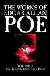

A Brief History
Edgar Allen Poe, son of Actress Eliza Poe and Actor David Poe Jr., born 19th January 1809, was mostly known for his poems and short tales and his literary criticism. He has been given credit for inventing the detective story and his psychological thrillers have been influences for many writers worldwide.


In 1827, Edgar published his first book, "Tamerlane and other poems" anonymously under the signature "The Bostonian". The poems were heavily influenced from Byron and showed a youthful attitude.
- The Cask of Amontillado.
- The Pit and the Pendulum.
- The Tell-Tale Heart.
The Poe Museum
The Poe Museum provides a retreat into early nineteenth century Richmond where Edgar Allen Poe lived and worked. The museum features the life and career of Edgar Allen Poe by documenting his accomplishments with pictures, relics, verse and focusing on his many years in Richmond. Opened in 1922, in The Old Stone House, the museum is only blocks away from Poes's first Richmond home and his first place of employment, the Southern Library Messenger.

Quotes of Edgar Allen Poe

This maiden she lived with no other though,
Than to love and be loved by me
I would define, in brief, the Poetry of words as the Rhytmical Creation of Beauty,
its sole arbiter of Taste.
Deep into that darkness peering, long I stood there, wondering, fearing
Doubting, dreaming dreams no mortal ever dreamed before.
The skies they were ashen and sober;
The leaves were crisped and sere - The leaves they were wither and sere;
It was night in the lonesome October, Of my most immemorial year.
The Death of Edgar Allen Poe
 Poe suffered from bouts of depression and madness, and he attempted suicide in 1848. In September
the following year he disappeared for three days after a drink at a birthday party on his way to visit his new fiancée, in Richmond.
He turned up in a delirious condition in a Baltimore gutter and died on
October 7, 1849.
Poe suffered from bouts of depression and madness, and he attempted suicide in 1848. In September
the following year he disappeared for three days after a drink at a birthday party on his way to visit his new fiancée, in Richmond.
He turned up in a delirious condition in a Baltimore gutter and died on
October 7, 1849.